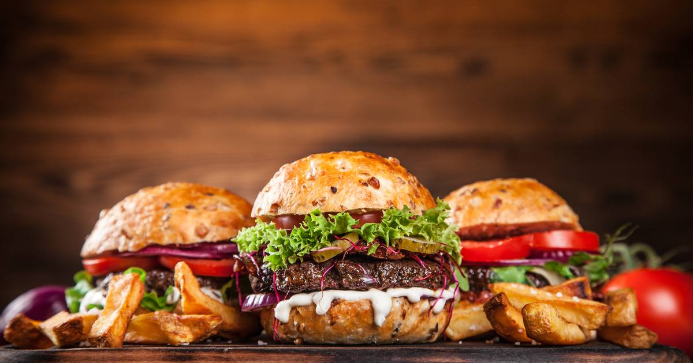

Ingrediënten:
4 portobello’s
2 tomaten
75 gr feta
Handje rucola
1 rode ui
peper en zout
4 broodjes
Voedingswaarde:
Energie 905 kcal
Vet 10,4g
Koolhydraten 73g
Waarvan suikers 21g
Vezels 21g
Eiwit 7,1g
Zout 2,6
Berijdingswijze:
1. Snijd de tomaten in plakjes en de rode ui halve ringen.
2. Meng de balsamico azijn, olie, zout en peper.
3. Verwijder het steeltje van de portobello en besmeer ze met een dun laagje van de marinade die je net hebt gemaakt.
4. Bak de portobello’s in een pan of op de bbq ongeveer 10 minuten. Keer af en toe om.
5. Snijd de broodjes doormidden. Beleg ze met een beetje rucola, wat plakjes tomaat de gebakken portobello, wat rode ui en kruimel er wat feta over.
Heerlijke lamsburger